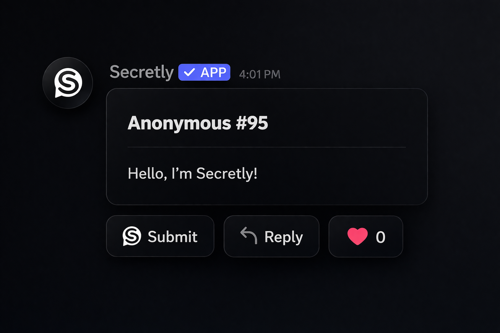

Anonymous message nights raised participation by 3x in our student Discord.
Secretly
Anonymous sharing
for Discord communities
Let members send anonymous messages, post hot takes,
and vent safely with moderation-first controls.
Quick setup
Invite Secretly, pick your anonymous channels, configure moderation filters, and open your first confessions board in minutes.

Community vibes
Built for honest conversations.
Core features
Everything you need for anonymous sharing.
Anonymous messages
Members submit privately while your server sees only the message content.
Hot takes mode
Spin up structured prompts to collect controversial takes without callout pressure.
Venting channels
Create support-focused spaces with optional delayed posting and calming prompts.
Moderator approval queue
Review or auto-filter flagged posts before they appear in public channels.
Custom posting rules
Set cooldowns, word filters, role access, and quiet hours for each channel.
Insight dashboard
Track message volume, trends, and sentiment signals so moderators can respond early.
Why Secretly
What Secretly is designed for.
Not a public confession dump.
Secretly is private by default with moderation gates and configurable channel scopes.
Not a generic form bot.
Purpose-built flows for anonymous messages, hot takes, and emotional venting.
Not chaos-first.
Built-in filters, cooldowns, and approvals keep your community safe and usable.
Not anonymous to admins.
Safety tooling gives trusted moderators controlled access to incident-level logs.
Not one-size-fits-all.
Run different settings for school servers, gaming groups, creator communities, and support spaces.
FAQ
Frequently asked questions.
How does anonymous posting work?
Members submit through Secretly, and the post is published without exposing their identity to the channel.
Can moderators review posts before publishing?
Yes. You can require all posts, only vent posts, or only filtered posts to pass through an approval queue.
What are hot takes?
Hot takes are prompt-based threads where members submit spicy opinions anonymously and others react safely.
What makes venting mode different?
Venting mode adds stricter filters, optional delays, and support-oriented guardrails to reduce escalation.
Can I limit who can submit anonymously?
Absolutely. Restrict by role, account age, and channel-level permissions.
Get started
Launch Secretly in your server
Launch Secretly in your server
in under five minutes.
/
secretly invite
Configure anonymous posts, hot takes, and venting channels with moderation controls tuned to your community.